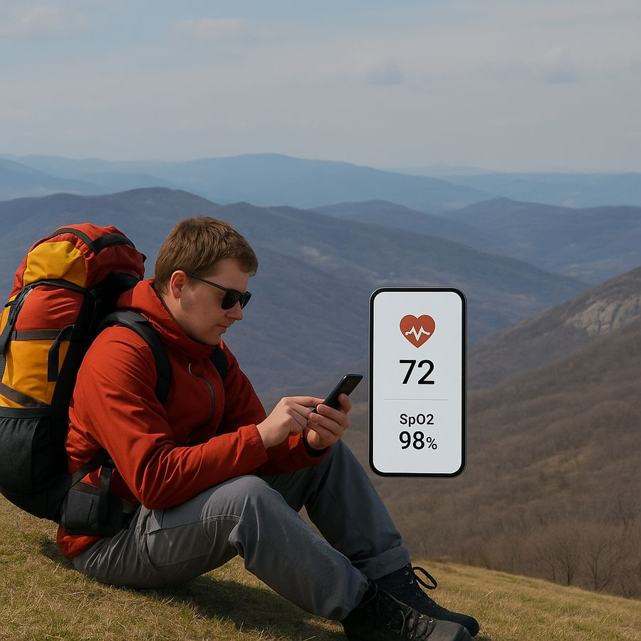
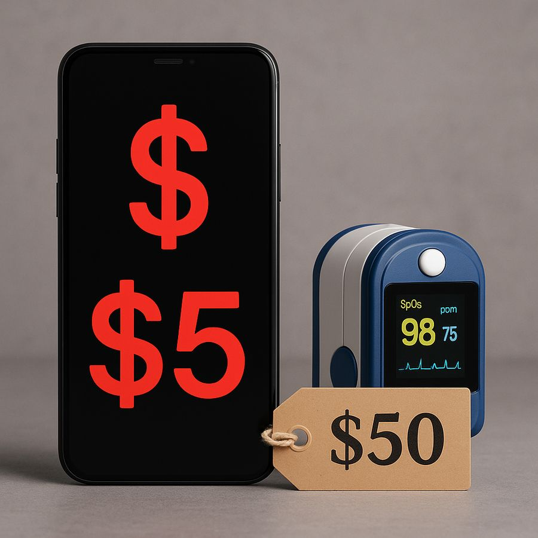
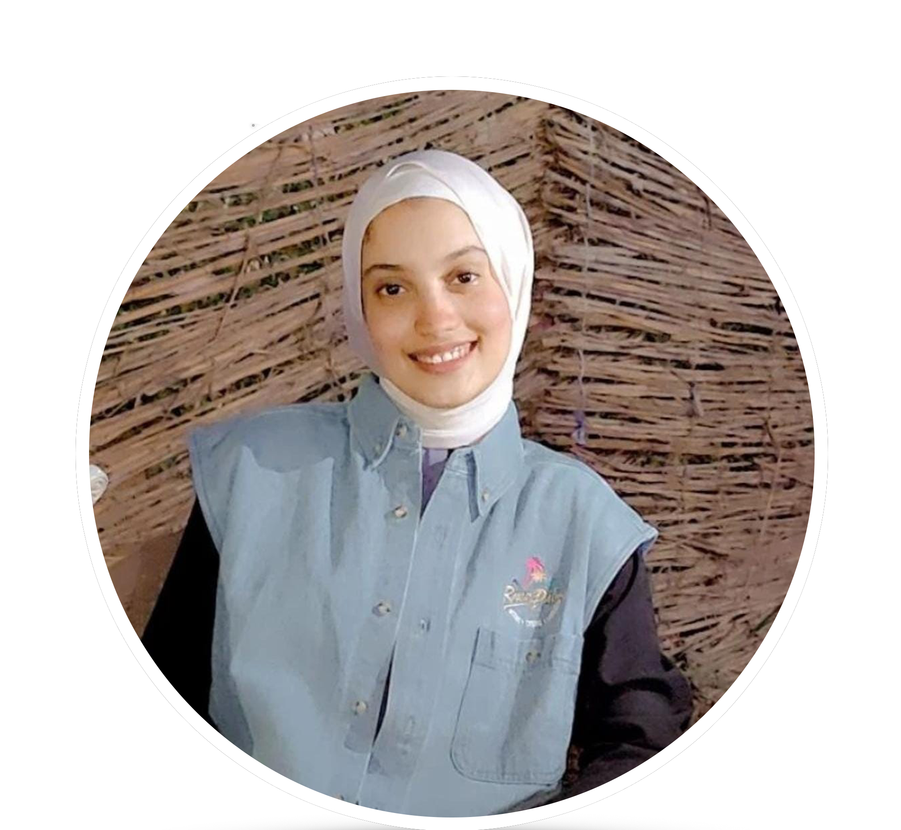
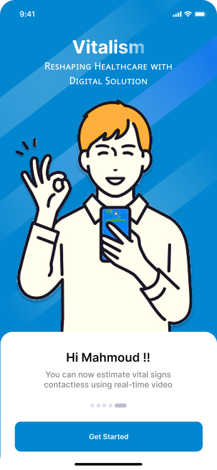
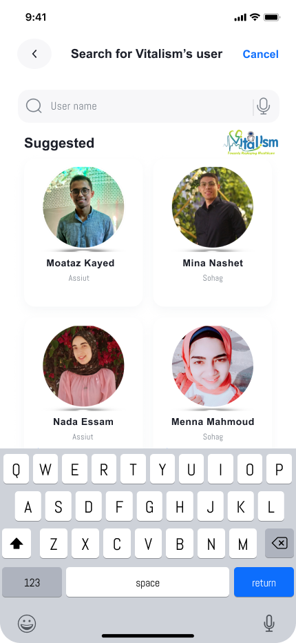
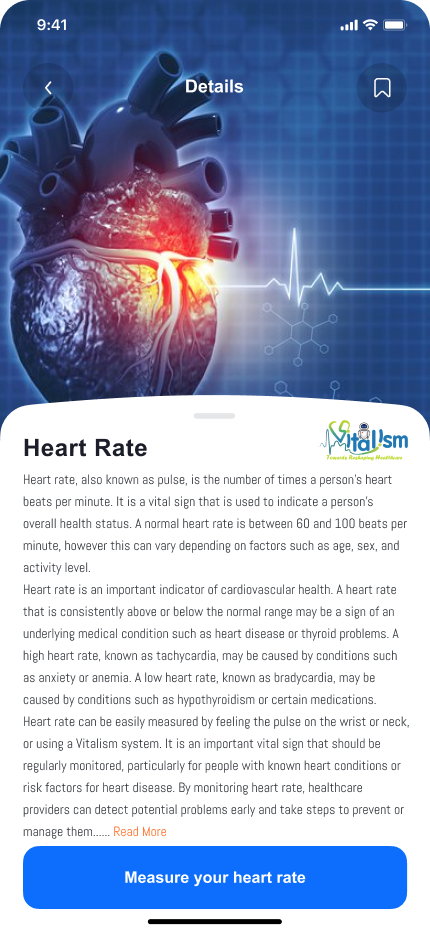
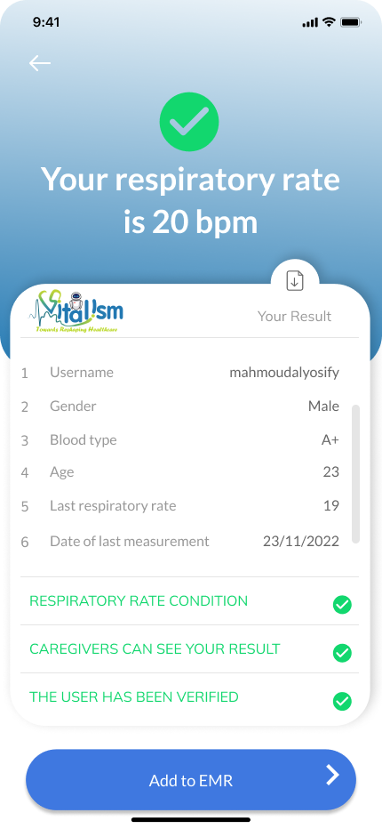
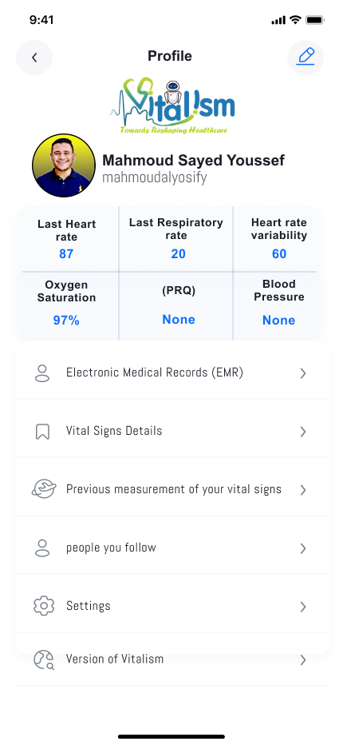
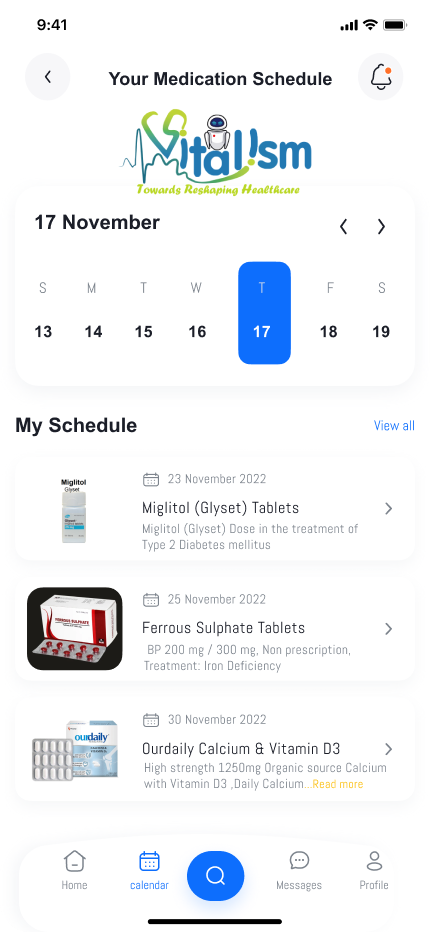
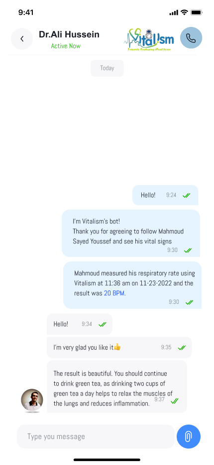

Always accessible
Works on all popular smartphones, tablets and laptops. It runs on the device, with no internet connection needed.
An AI-powered, video-based health and wellness monitoring solution, built to reshape healthcare.
Vitalism is the belief that living organisms are fundamentally different from non-living things, because they contain a non-physical element or are governed by different principles than inanimate matter. Our project takes its name from this belief — and from its close link to vital signs.
Vital signs such as Heart Rate (HR), Heart Rate Variability (HRV) and Oxygen Saturation (SpO₂) are key indicators of a person’s physiological and emotional wellbeing. Measuring them is the most important first step in understanding a patient’s current condition, and a basic task of biomedical metrology to ensure the individual’s safety.
Listen to the story of Vitalism in English.
Listen to the story of Vitalism in Arabic.
Accurate health insights from the camera people already own — simple, affordable and private.

Works on all popular smartphones, tablets and laptops. It runs on the device, with no internet connection needed.

Made for everyone — no wearables or sensors required.
Just look at your device’s camera for 60 seconds — no change in habits needed.
Delivers vital signs measurements for any gender and any skin color.
Delivered as an SDK that supports a wide range of devices and operating systems. The Vitalism SDK has no access to end users’ health data.
Ready-to-use solutions and 24/7 human customer support for immediate integration and use.
Meet the mentor leading the Vitalism project.

Mentor of the Vitalism project
Meet the passionate team driving innovation.
Team Leader
Team Coordinator
Team Member

Team Member
Team Member
Team Member
Vitalism is available as a desktop application and an Android application, sharing one clear, consistent design language.




.png)








Vitalism Check is a ready-to-use application and management portal that businesses can use to measure their clients’ health parameters remotely — or to let clients measure them on their own. The application is compatible with desktops, mobile devices and web applications.
Vitalism Check runs on Android mobile devices and on Windows laptops and desktops. It is also available as a web application for the Google Chrome and Safari mobile browsers.
Yes. An internet connection is needed to complete measurements with Vitalism Check.
No. Vitalism Check does not save images or videos of its users.
No. Vitalism has no access to the measured data. It is accessible only to your account admins and your clients, so that both of you can review measurement history and trends.
Vitalism offers two measurement methods:

Have a specific use case in mind for Vitalism technology? Let’s set up a call and talk it through.